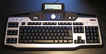

The keyboard is the usual text input device for a computer. Alternatives include the scanner for printed text, with the input processed by optical character recognition (OCR) software, and the microphone for spoken text, with the input processed by speech recognition software software. The keyboard translates keystrokes into signals that can be interpreted by the PC. As well as letters, numerals, and punctuation, keyboards have keys for navigation and 'control' keys that send instructions to the computer, as well as modifier keys that change the effect of keys that are pressed at the same time or just after the modifier. Some specialist keyboards have extra function keys that perform special actions when pressed. An example is a gaming keyboard seen on the right.
